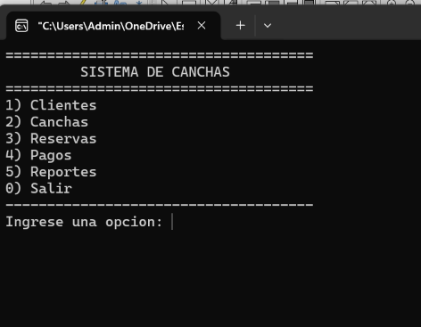
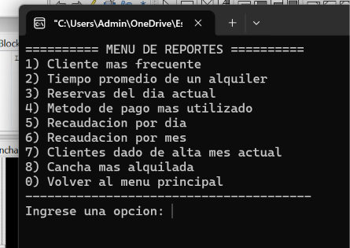
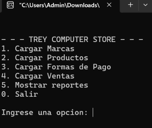
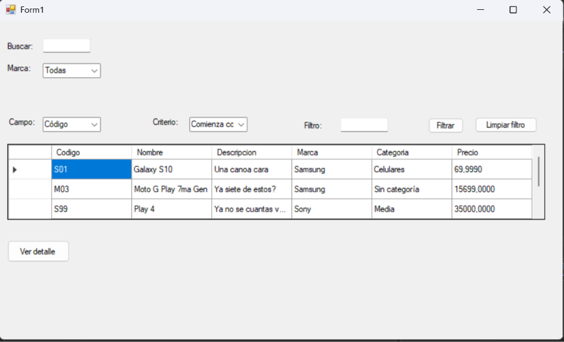

Ana Belén Lobo
Estudiante de Programación
Estudiante de la Tecnicatura Universitaria en Programación en la UTN, enfocada en seguir desarrollando mis habilidades y adquirir experiencia en el área IT.
Ver proyectos Descargar CVSobre mí
Soy estudiante de la Tecnicatura Universitaria en Programación en la UTN y actualmente me encuentro desarrollando mis conocimientos en programación y tecnología.
Paralelamente, trabajo en un comercio del rubro sanitario, donde realizo tareas administrativas, atención al cliente, manejo de cuentas corrientes y elaboración de presupuestos para obras, constructoras y consumidores finales.
Mi objetivo es continuar formándome en programación, adquirir experiencia en el área IT y orientar mi desarrollo profesional hacia el sector tecnológico.
Ubicación
Don Torcuato, Buenos Aires
Idiomas
Español: nativo | Inglés: básico
Educación
Tecnicatura Universitaria en Programación - UTN (en curso)
Experiencia
2023 – hoy
Casa de Sanitarios Triunvirato - Cajera / Administrativa
Atención al cliente, manejo de caja, gestión de cuentas corrientes y elaboración de presupuestos.
Conocimientos
Lenguajes de programación
- C++
- C#
- JavaScript - conocimientos básicos
Programación
- Programación Orientada a Objetos (POO) en C++ y C#
- Desarrollo de aplicaciones con Windows Forms
- Lógica de programación y resolución de problemas
Desarrollo web
- HTML
- CSS
- JavaScript - conocimientos básicos
Base de datos
- SQL Server - actualmente en formación
Herramientas
- Git
- GitHub
- Visual Studio
- Visual Studio Code
Proyectos
Sistema de Gestión de Canchas


Aplicación de consola desarrollada en C++ para la gestión de canchas deportivas. Permite administrar información de canchas, clientes, reservas y pagos, utilizando archivos para almacenar los datos. Incluye validaciones y generación de reportes.
Desarrollo: Individual
Mi rol: Desarrollo integral del proyecto.
Tecnologías: C++
Ver proyecto en GitHubSistema de Gestión - Trabajo Práctico Integrador

Aplicación de consola desarrollada en C++ como Trabajo Práctico Integrador. Permite gestionar información mediante menús interactivos, utilizando estructuras, funciones y archivos para organizar y almacenar los datos.
Desarrollo: Grupal - Equipo de 2 integrantes
Mi rol: Desarrollo colaborativo de funcionalidades, lógica del sistema y manejo de datos.
Tecnologías: C++
Ver proyecto en GitHubSistema de Gestión de Artículos - C# Windows Forms

Aplicación de escritorio desarrollada en C# con Windows Forms y SQL Server para la gestión de artículos. Permite listar, buscar, agregar, modificar y eliminar artículos, administrando también sus marcas, categorías, imágenes y precios.
Desarrollo: Grupal - Equipo de 3 integrantes
Mi rol: Desarrollo colaborativo de funcionalidades, interfaz gráfica y conexión con la base de datos.
Tecnologías: C#, Windows Forms, SQL Server, ADO.NET, Git y GitHub.
Ver proyecto en GitHubRedes
Contacto
Podés contactarme por email o WhatsApp para oportunidades laborales o consultas.